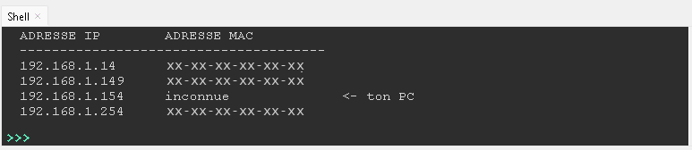

L'informatique me passionne, et j'explore ses branches — électronique, réseaux, code — pour trouver ma voie.
À propos
Actuellement en dernière année de Bac PRO CIEL (Cybersécurité, Informatique et réseaux, Électronique) au lycée professionnel Jacques de Flesselles, obtenu avec mention très bien.
À la rentrée 2026, je rejoins le BTS SIO (Services Informatique aux Organisations) au lycée Jacques Brel, pour approfondir le développement et l'administration des systèmes.
Mon parcours en stages m'a fait toucher à peu près tout ce qui compose un poste de travail : installation électrique, diagnostic matériel, réseau, et un peu de code.
Ce que je sais faire
Formation
BTS SIO — Services Informatique aux Organisations
Spécialisation à venir en administration des systèmes, réseaux et développement d'applications.
BAC PRO CIEL — Cybersécurité, Informatique et réseaux, Électronique
Formation technique couvrant l'électronique, les réseaux et les bases de la cybersécurité.
Mention très bienCertifications
Expériences professionnelles
Stage de première
Modélisation, impression 3D et code
- Modélisation et impression 3D
- Codage simple en HTML, CSS et Python
Stage de première
Maintenance informatique
- Réparation, contrôle et test complet d'ordinateurs
- Configuration de postes via clé USB bootable
- Interventions basiques sur le réseau
Stage de seconde
Installations électriques
- Travaux d'installations électriques
- Installation simple (ampoules, câbles, prises hors tension)
Réalisations
Scanner réseau local
TerminéUn script Python qui découvre tous les appareils connectés à mon réseau domestique — sans aucun outil ni matériel à acheter, juste mon PC.
Savoir précisément quels appareils sont connectés à ma box, et comprendre comment un réseau local s'organise réellement.
Détection du sous-réseau, balayage ping en parallèle (threads) sur les 254 adresses possibles, puis lecture de la table ARP pour les adresses MAC.
Le script tourne du premier coup et retourne une table lisible, avec repérage automatique de mon propre PC.

Station météo connectée
TerminéUne station physique (microcontrôleur MicroPython) qui lit un capteur de température/humidité, affiche les valeurs sur un écran LCD et un bandeau LED, et sert une page web en direct sur le réseau du lycée — sans aucun framework.
Afficher la météo ambiante sur un objet physique, mais aussi pouvoir la consulter à distance depuis n'importe quel navigateur du réseau.
Lecture d'un capteur DHT11, driver bas niveau pour un écran LCD 128×64 en SPI, LED qui change de couleur selon la température, mini serveur web en socket brut.
Affichage en direct sur l'écran, LED qui passe du bleu au rouge selon le seuil, page web qui se rafraîchit automatiquement toutes les 10 secondes.